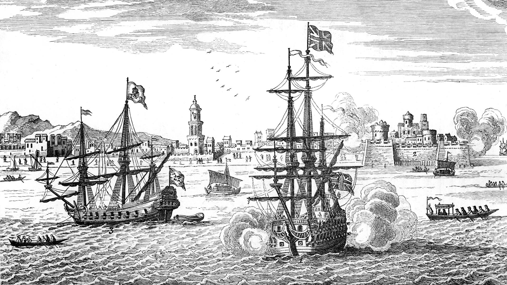

1587- First Filipino immigrants
Before the United States were even founded, the Spanish controlled Americas involved people from the philippines. Most of them were sailors working under the spanish empire. They were called Manilamen at the time. Current day Morro Bay, California was were most of these early immigrants were recorded. Towards the end of the war of 1812 (american revolution part 2.), filipino immigrants served against the british. While they didn’t have a permanent settlement until 1763, it’s important to note that the Asian and American worlds have been connected for centuries.
Learn More: